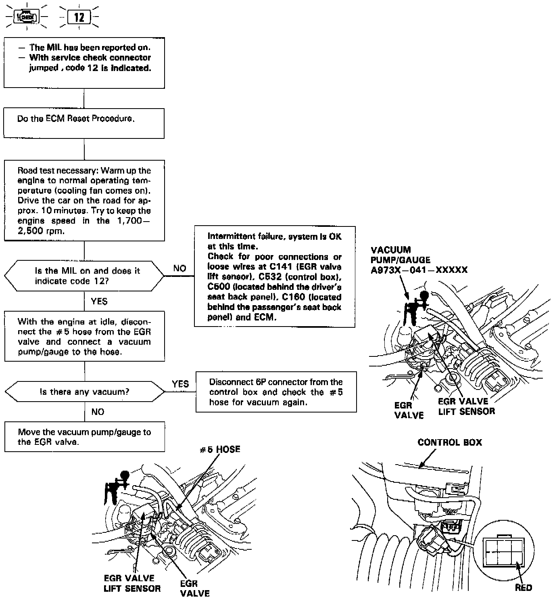
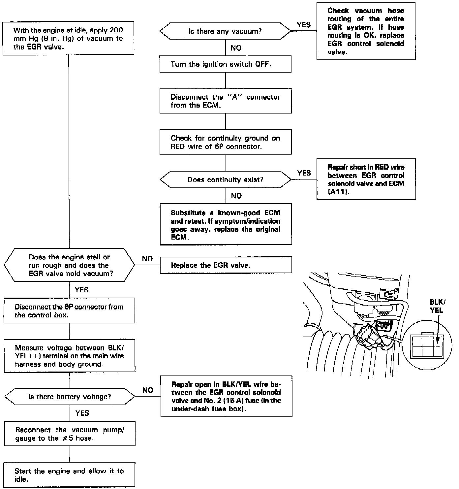
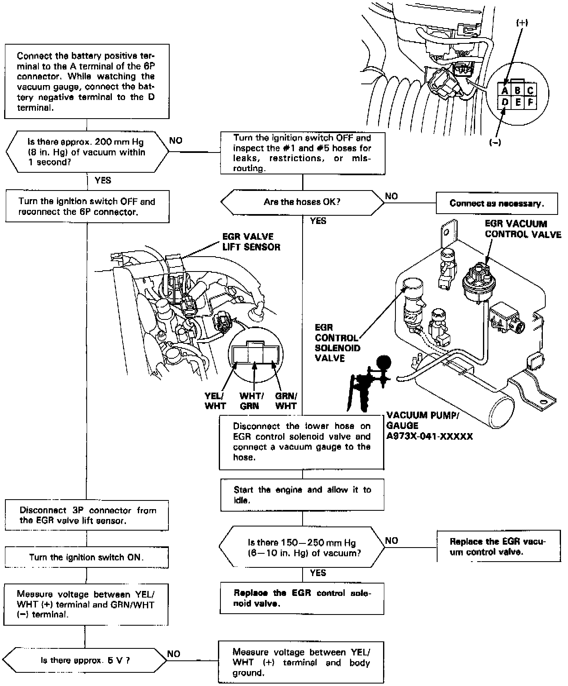
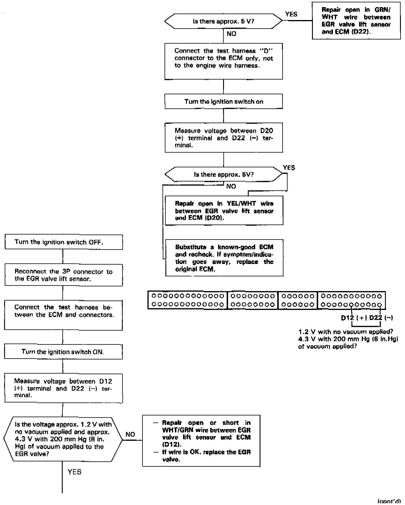
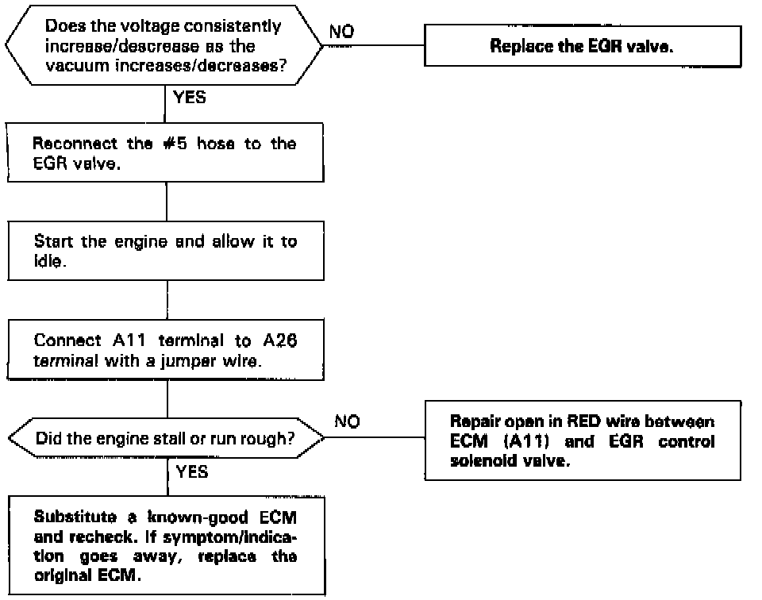

DTC 12
The Malfunction Indicator Lamp indicates Diagnostic Trouble Code 12: A problem in the exhaust gas recirculation system.




The exhaust gas recirculation system is designed to reduce oxides of nitrogen emissions (NOx) by recirculating exhaust gas through the exhaust gas recirculation valve and the intake manifold into the combustion chambers. It is composed of the exhaust gas recirculation valve, exhaust gas recirculation vacuum control valve, exhaust gas recirculation control solenoid valve, engine control module and various sensors.
The engine control module contains memories for ideal exhaust gas recirculation valve lifts for varying operating conditions. The exhaust gas recirculation valve lift sensor detects the amount of exhaust gas recirculation valve lift and sends the information to the engine control module. The engine control module then compares it with the ideal exhaust gas recirculation valve lift which is determined by signals sent from the other sensors. If there is any difference between the two, the engine control module varies current to the exhaust gas recirculation control solenoid valve to regulate vacuum applied to the exhaust gas recirculation valve.